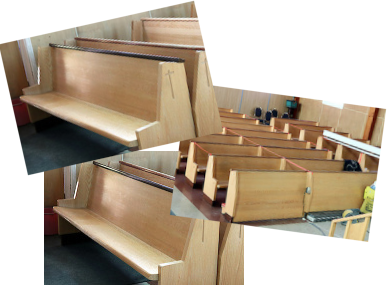

Capitation 2024
Afin de garder notre Église bien vivante, votre don est une façon de la conserver au niveau financier pour s’assurer un lieu de culte accueillant et sécuritaire.
Vous pouvez également faire vos dons via la Poste en les adressant à
La Fabrique St-Paul, 700, 8e Avenue, Senneterre, J0Y 2M0.
Bancs d’église à vendre

Idéal pour projet ou pour décors
100$ petit / 150$ grand
Contactez Nancy au (819) 737-2045
(sur les heures de bureau (mar-jeu))
fabriquesenneterre@outlook.com
Équipe de la Joie (recrutement)
Notre mission est d’apporter de la joie aux personnes de notre entourage, surtout celles qui sont seules ou malades. Nous avons besoin de bénévoles pour remplir ce mandat.
Comment ? En soulignant les fêtes (Noël, Pâques, anniversaires), visites, téléphones et toutes initiatives pour contrer l’isolement de nos aînés
Si vous êtes intéressé(e)s à joindre l’équipe de la Joie, vous pouvez donner votre nom au secrétariat au 819-737-2045. Merci !